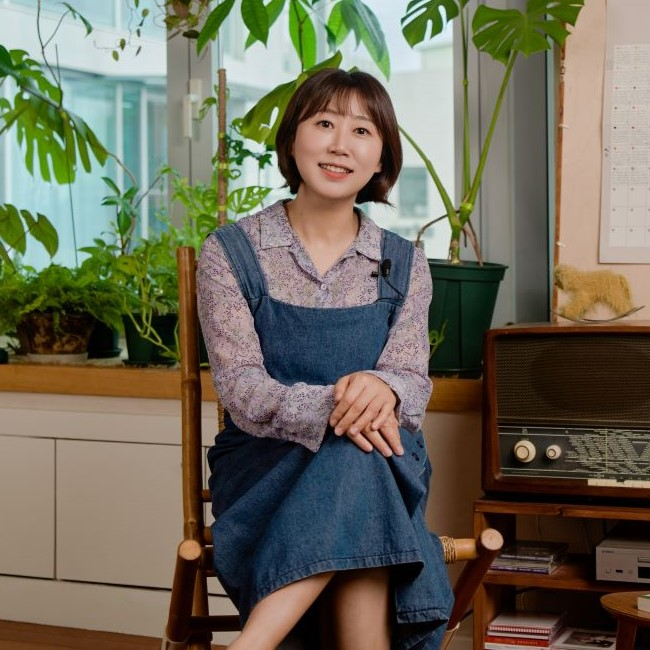
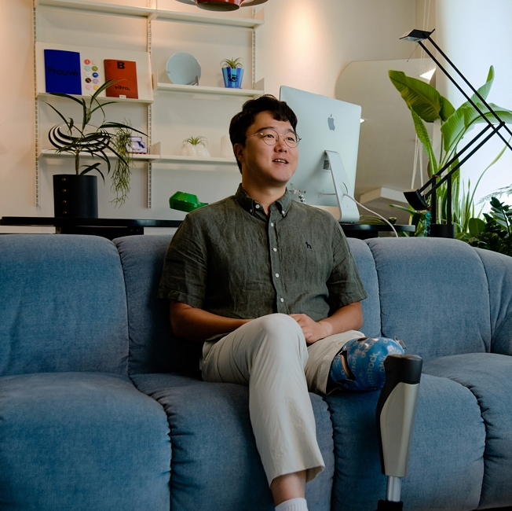
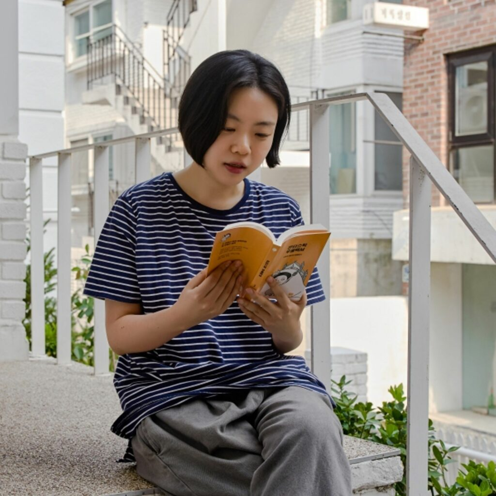
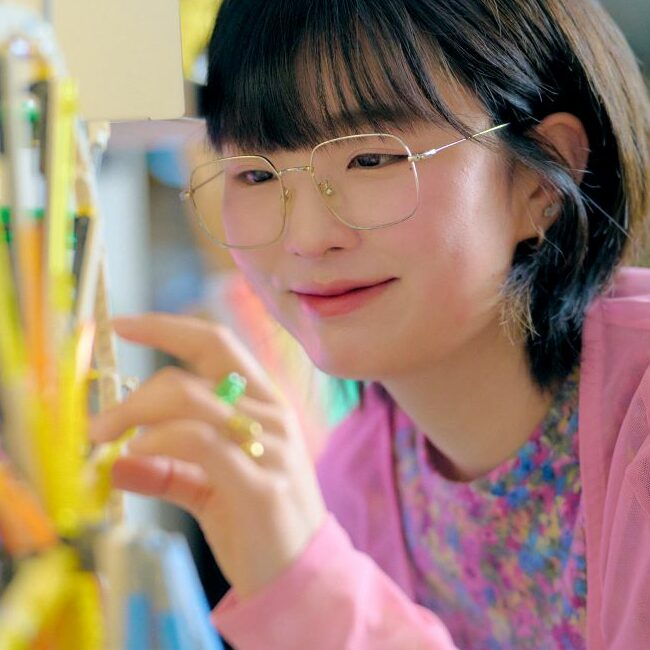
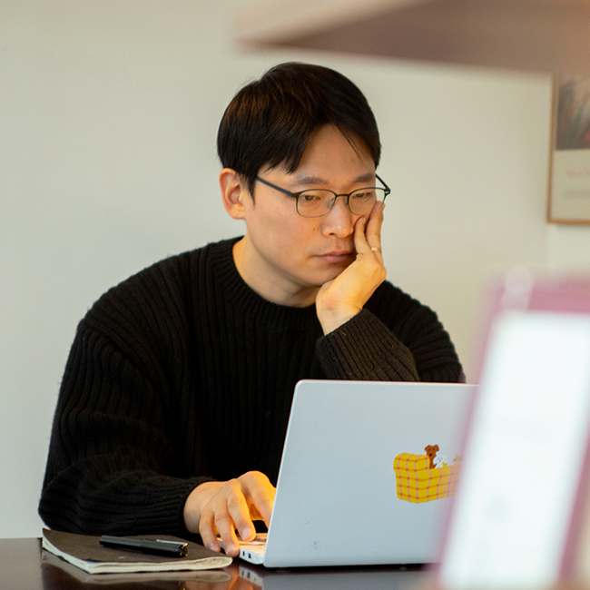

-
-

PEOPLE
이어지는 삶 속에서 새로 발견한 것
“나만의 목표를 갖고 작은 시도를 계속 해보는 게 중요해요”
박찬종크리에이터, 패러사이클링 선수
-

PEOPLE
잘하고 싶은 마음보다 일단 ‘시작’하는 마음으로
“작은 목표를 향해 한 걸음, 한 걸음 내딛다 보면 ‘끝’도 있더라고요”
서귤일러스트레이터
-
-
-

PEOPLE
행복은 아주 작은 것에서부터
“살아가는 모든 순간, 아이와 같은 마음이 필요해요”
누아일러스트레이터
-

PEOPLE
기사를 쓰는데 이렇게까지
“휠체어를 타고 바퀴를 굴리자마자 ‘내가 알던 세상이 아니구나.’ 느꼈어요. ”
남형도기자
-